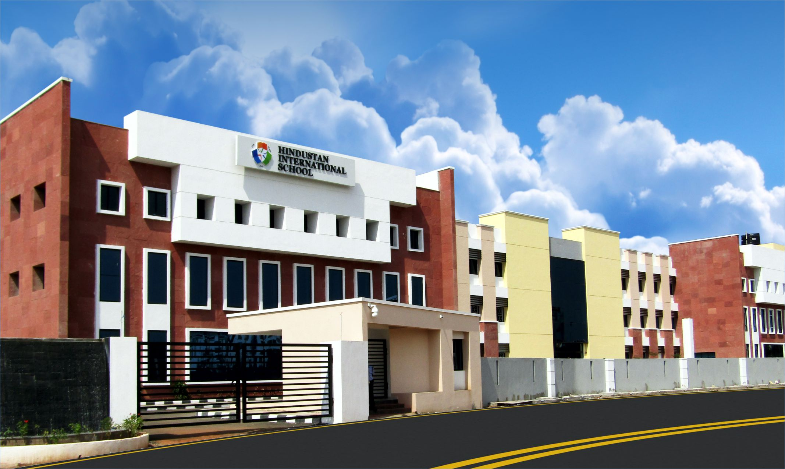
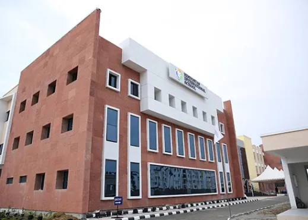
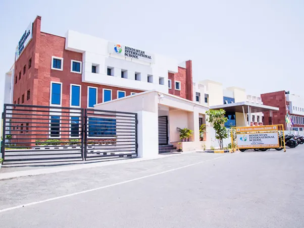
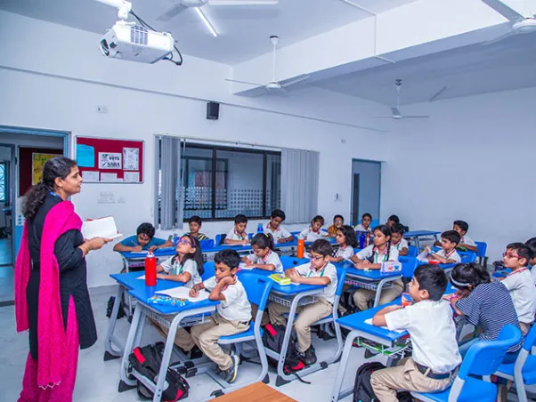
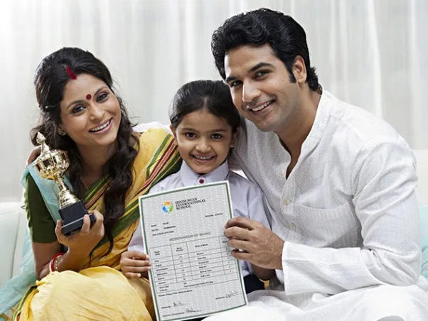
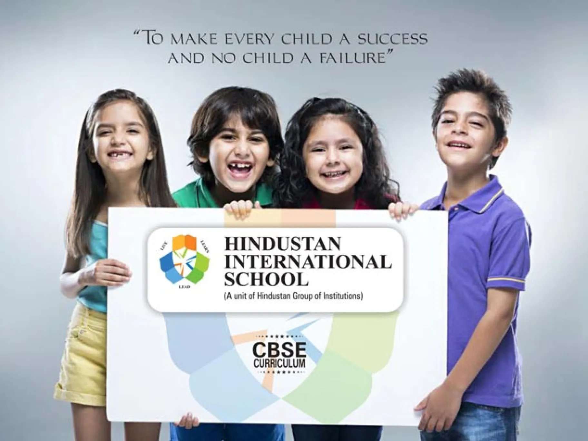

Apply Online / Log in / Contact Us


Hindustan International School (HIS) is distinguished by its unique approach towards learning and its commitment to providing quality education Leveraging the best practices of both traditional and contemporary schools of education; we measure our performance by our student’s excellence in academics and co-curricular activities, in addition to developing an enduring interest in sports, performing arts and other extracurricular activities. HIS Padur affiliated with the Central Board of Secondary Education(CBSE) Syllabus. The school is spread on a sprawling 5-acre campus on OMR. The campus is spacious and is strategically planned to offer the best learning environment for the children. With its technology aided classrooms and well-designed sporting facilities, HIS Padur will help children explore themselves and realize their full potential.

Established by the pioneers
Hindustan International School is established by the prestigious Hindustan Group of Institutions.
The academic and advisory board of the school comprises of highly educated, proficient, socially reputed and responsible citizens.

A Professional Teaching Team that learns & leads by example
Our school is led by and an extremely talented team of teachers. And talent is not the only attribute they possess. Each one of our teachers has an innate passion, not just to teach, but also to learn.

Ensuring parents are always up-to-date
We at HIS have introduces software which benefits all teachers, parents, and students. Parents can now view lesson plans, homework and grades under password protection on the unique Parents Web Services. Parents can also check their student’s progress from any location via the web.

A unique approach that stands apart
The Hindustan International School is distinguished by its unique approach and values towards learning and its commitment to providing quality education.
© 2024 Hindustan International School- Padur. All rights reserved.